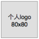

四仰八叉
团队介绍
百度前端任务
前端技术学院的课程任务是由百度前端工程师专为对前端不同掌握程度以下为示例 重要说明 百度前端技术学院的课程任务是由百度前端工程师专为对前端不同掌握程度的同学设计。我们尽力保证课程内容的质量以及学习难度的合理性，但即使如此，真正决定课程效果的，还是你的每一次思考和实践。 课程多数题目的解决方案都不是唯一的，这和我们在实际工作中的情况也是一致的。因此，我们的要求不仅仅是实现设计稿的效果，更是要多去思考不同的解决方案，评估不同方案重要说明 百度前端技术学院的课程任务是由百度前端工程师专为对前端不同掌握程度的同学设计。我们尽力保证课程内容的质量以及学习难度的合理性，但即使如此，真正决定课程效果的，还是你的每一次思考和实践。 课程多数题目的解决方案都不是唯一的，这和我们在实际工作中的情况也是一致的。因此，我们的要求不仅仅是实现设计稿的效果，更是要多去思考不同的解决方案，评估不同方案